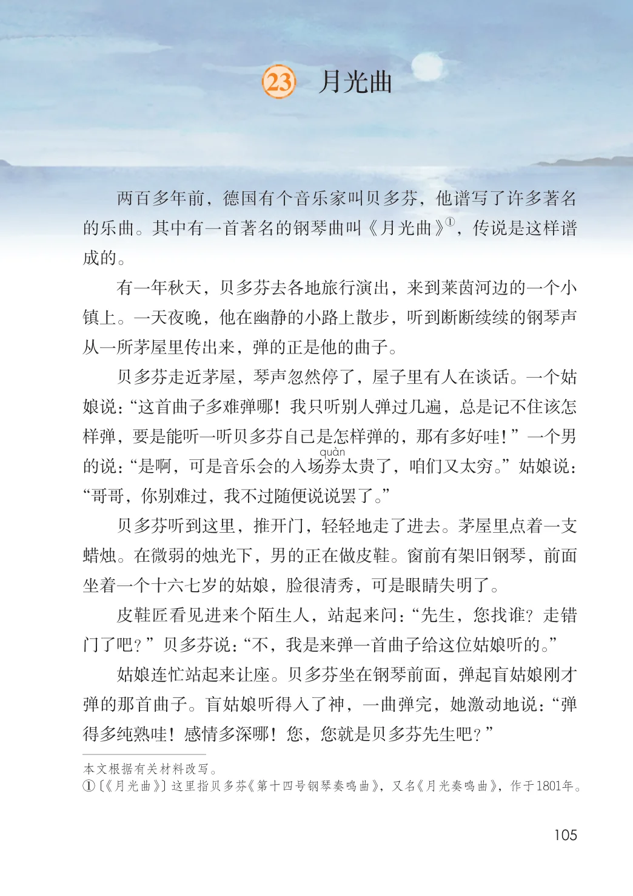
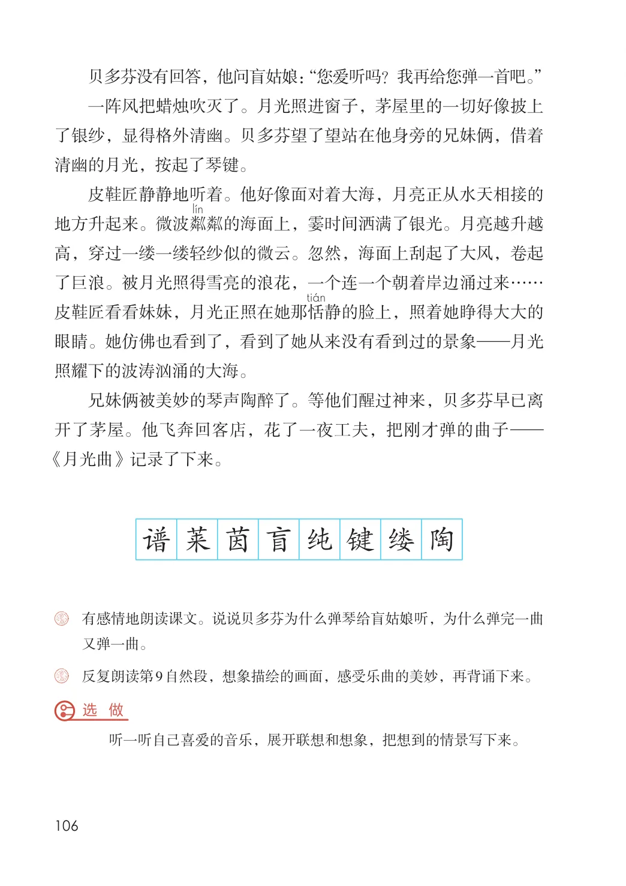

第七单元 · 第 23 课
月光曲
文字内容 PDF 第 110 页
两百多年前，德国有个音乐家叫贝多芬，他谱写了许多著名①，传说是这样谱的乐曲。其中有一首著名的钢琴曲叫《月光曲》成的。
有一年秋天，贝多芬去各地旅行演出，来到莱茵河边的一个小镇上。一天夜晚，他在幽静的小路上散步，听到断断续续的钢琴声从一所茅屋里传出来，弹的正是他的曲子。
贝多芬走近茅屋，琴声忽然停了，屋子里有人在谈话。一个姑娘说： “这首曲子多难弹哪！我只听别人弹过几遍，总是记不住该怎样弹，要是能听一听贝多芬自己是怎样弹的，那有多好哇！”一个男的说： “是啊，可是音乐会的入场券太贵了，咱们又太穷。”姑娘说：
课后练习
- “哥哥，你别难过，我不过随便说说罢了。”贝多芬听到这里，推开门，轻轻地走了进去。茅屋里点着一支蜡烛。在微弱的烛光下，男的正在做皮鞋。窗前有架旧钢琴，前面坐着一个十六七岁的姑娘，脸很清秀，可是眼睛失明了。皮鞋匠看见进来个陌生人，站起来问： “先生，您找谁？走错门了吧？”贝多芬说： “不，我是来弹一首曲子给这位姑娘听的。”姑娘连忙站起来让座。贝多芬坐在钢琴前面，弹起盲姑娘刚才弹的那首曲子。盲姑娘听得入了神，一曲弹完，她激动地说： “弹得多纯熟哇！感情多深哪！您，您就是贝多芬先生吧？”本文根据有关材料改写。① 〔《月光曲》〕这里指贝多芬 《第十四号钢琴奏鸣曲》，又名 《月光奏鸣曲》，作于1801年。
课后练习
- 贝多芬没有回答，他问盲姑娘： “您爱听吗？我再给您弹一首吧。”一阵风把蜡烛吹灭了。月光照进窗子，茅屋里的一切好像披上了银纱，显得格外清幽。贝多芬望了望站在他身旁的兄妹俩，借着清幽的月光，按起了琴键。皮鞋匠静静地听着。他好像面对着大海，月亮正从水天相接的地方升起来。微波粼粼的海面上，霎时间洒满了银光。月亮越升越高，穿过一缕一缕轻纱似的微云。忽然，海面上刮起了大风，卷起了巨浪。被月光照得雪亮的浪花，一个连一个朝着岸边涌过来……皮鞋匠看看妹妹，月光正照在她那恬静的脸上，照着她睁得大大的眼睛。她仿佛也看到了，看到了她从来没有看到过的景象—月光照耀下的波涛汹涌的大海。兄妹俩被美妙的琴声陶醉了。等他们醒过神来，贝多芬早已离开了茅屋。他飞奔回客店，花了一夜工夫，把刚才弹的曲子—《月光曲》记录了下来。谱莱茵盲纯键缕陶
- 有感情地朗读课文。说说贝多芬为什么弹琴给盲姑娘听，为什么弹完一曲又弹一曲。
- 反复朗读第9自然段，想象描绘的画面，感受乐曲的美妙，再背诵下来。选 做听一听自己喜爱的音乐，展开联想和想象，把想到的情景写下来。
原版对照
原书页面与全部插图
点击图片可查看大图。

